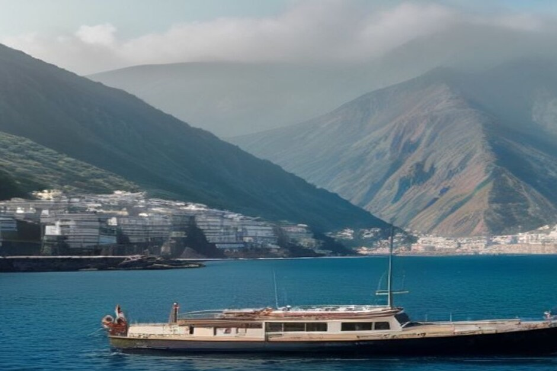

Es la pregunta que nos hacen casi todos los huéspedes que nunca han subido a un barco pequeño: «¿me voy a marear?». Aquí va la respuesta sincera: qué causa realmente el mareo, por qué la costa sur de Madeira es más tranquila de lo que la gente espera, y qué hacer si eres propenso a marearte.
¿Es frecuente marearse en un paseo en barco en Madeira?
Es menos frecuente de lo que suponen la mayoría de los visitantes primerizos. El mareo aparece cuando el oído interno no coincide con lo que ven los ojos: el movimiento que sientes no encaja con un horizonte fijo, y ese desajuste es peor en mar abierto y agitado. La costa sur de Madeira, resguardada por la propia masa de la isla de los vientos dominantes del norte y noreste, no se comporta como el Atlántico abierto. Los barcos que navegan entre Funchal, Câmara de Lobos y Ribeira Brava se mantienen cerca de tierra en todo momento, con un agua que suele ser un balanceo suave y no un oleaje picado. La mayoría de los huéspedes que se preocupaban de antemano nos cuentan después que ni siquiera volvieron a pensar en ello una vez zarpamos.

¿Por qué el mar está más tranquilo en la costa sur de Madeira?
Porque la propia isla actúa como cortavientos. Las montañas de Madeira se elevan abruptamente desde la costa, y el viento y el oleaje dominantes llegan del norte, así que la costa sur, que va desde Funchal pasando por Câmara de Lobos y Cabo Girão hasta Ribeira Brava, queda a sotavento de la isla durante la mayor parte del año. Ese es precisamente el tramo por el que discurren nuestro Day Trip y Sunset Trip. Las condiciones siguen variando de un día a otro, por lo que cualquier operador responsable consulta el parte meteorológico marino antes de cada salida en lugar de prometer aguas tranquilas pase lo que pase — pero, estructuralmente, este litoral es de lo más apacible que se puede navegar en Madeira.
¿Qué ayuda realmente a prevenir el mareo?
Mirar el horizonte ayuda más de lo que la mayoría espera: fijar la vista en un punto lejano y estable resincroniza el oído interno con lo que estás viendo, y por eso el peor sitio para sentarse es bajo cubierta o con la vista clavada en el móvil. Quedarse cerca del centro del barco, donde el movimiento es menor, también ayuda, igual que respirar aire fresco en vez de quedarse en una cabina cerrada. Si sabes que eres propenso a marearte, las pastillas sin receta como la cinarizina o el dimenhidrinato funcionan bien si se toman entre 30 y 60 minutos antes de embarcar, y las pulseras de acupresión son una opción razonable y sin efectos secundarios que muchos huéspedes ya llevan de los vuelos o los ferris.
¿Qué deberías comer y beber antes de un paseo en barco?
Algo ligero y sencillo, una o dos horas antes: unas tostadas, fruta o un sándwich sencillo sientan mucho mejor que una comida pesada y grasienta o que no comer nada. El estómago vacío es casi tan malo como el empachado, y el alcohol la noche anterior empeora cualquier sensibilidad al movimiento, no la mejora. A bordo, dar pequeños sorbos de agua y evitar el sol directo ayudan más de lo que se cree; la deshidratación y el sobrecalentamiento agravan las náuseas por sí solos, al margen del movimiento del barco.
¿Qué excursión de Chifbay es más suave si te preocupa el mareo?
Las dos recorren exactamente el mismo tramo de costa resguardada, así que ninguna tiene una ventaja estructural sobre la otra, pero conviene conocer algunas diferencias prácticas. El Day Trip (2h30, 500 €, o 3h hasta Ponta do Sol, 600 €) incluye paradas para bañarse en Fajã dos Padres y Ribeira Brava, que te dan la oportunidad de bajar del barco y recuperarte si lo necesitas. El Sunset Trip (2h, 400 €, o 2h30 hasta Ribeira Brava, 500 €) zarpa a las 18:00, cuando el viento del día ya suele haber amainado, y se mantiene en movimiento en todo momento en lugar de fondear para bañarse — algunos huéspedes encuentran que un barco avanzando de forma constante a una velocidad cómoda resulta más llevadero que uno balanceándose fondeado. En cualquier caso, al tratarse de un chárter privado solo para tu grupo, puedes pedir a la tripulación que ajuste la velocidad o la ruta en cuanto algo no te siente bien, algo que no es posible en una excursión compartida.
¿Es peor un barco privado pequeño que un catamarán grande en cuanto al movimiento?
En la práctica no, aunque el movimiento se percibe distinto. Un barco más pequeño nota cada ola de forma más directa, así que sientes más el movimiento real del mar del que sentirías en un catamarán grande y pesado que lo suaviza. Lo que un chárter privado pequeño te devuelve a cambio es control: vistas despejadas del horizonte desde cualquier punto del barco, ninguna multitud bloqueando la borda, y una tripulación que conoce la costa lo bastante bien como para reducir la velocidad en el raro tramo de oleaje en vez de ceñirse a un horario fijo. Para la mayoría de los huéspedes, ese intercambio juega a su favor.
El mar no necesita estar en calma para disfrutarlo — solo necesita una tripulación que sepa leerlo bien.
Si alguna vez te has mareado, no dejes que eso te aleje del agua en Madeira. Dilo a la tripulación al reservar, siéntate donde puedas ver el horizonte, y recuerda que este litoral es de lo más resguardado que hay para navegar en la isla.